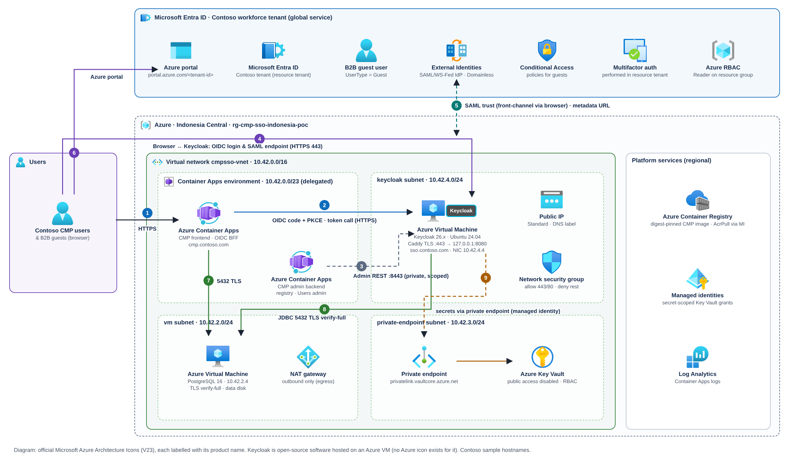

PoC architecture and Well-Architected review
The deployed topology with official Azure icons, the network and secret boundaries, and an honest pillar-by-pillar assessment.
This page documents the deployed PoC. For production, see the Azure landing zone target architecture (management groups, hub-and-spoke, Application Gateway WAF, private endpoints, PIM) and the pillar-by-pillar Well-Architected alignment.
Deployed topology#


| # | Flow | Protocol / port | Control |
|---|---|---|---|
| 1 | User → CMP frontend | HTTPS 443 (Container Apps ingress) | Server-side sessions, CSRF on state-changing calls |
| 2 | CMP frontend → Keycloak token endpoint | HTTPS 443, back-channel | Client secret from Key Vault; issuer/endpoint pinning; redirects refused |
| 3 | CMP admin backend → Keycloak Admin REST | HTTPS 8443, private | NSG allows only the Container Apps subnet; service client with three realm-management roles |
| 4 | Browser ↔ Keycloak | HTTPS 443 (Caddy, ACME certificate) | Only /realms/cmp-pdf/* and /resources/* proxied; everything else 404 |
| 5 | Entra ⇄ Keycloak (SAML) | Front-channel via browser; Entra may fetch the metadata URL | Signed responses; tenant audience; persistent NameID |
| 6 | User → Azure portal | HTTPS | Entra Conditional Access, mandatory MFA, Azure RBAC |
| 7 | CMP → PostgreSQL | TCP 5432, TLS verify-full | NSG: 5432 only from Container Apps subnet |
| 8 | Keycloak → PostgreSQL | JDBC 5432, TLS verify-full | Least-privilege database role keycloak_app |
| 9 | Apps / VMs → Key Vault | Private endpoint (10.42.3.0/24) | Public access disabled; per-secret RBAC for each managed identity |
Network plan#
| Address space | Use | Notes |
|---|---|---|
| 10.42.0.0/16 | VNet cmpsso-vnet | Adjust before peering with overlapping corporate ranges. |
| 10.42.0.0/23 | Container Apps environment (delegated) | VNet integration (Learn) |
| 10.42.2.0/24 | PostgreSQL VM (10.42.2.4) | No public IP; NAT gateway for explicit outbound (Learn) |
| 10.42.3.0/24 | Private endpoints | Key Vault Private Link + privatelink.vaultcore.azure.net (Learn) |
| 10.42.4.0/24 | Keycloak VM NIC 10.42.4.4 | Standard public IP with DNS label; NIC NSG + subnet NSG |
Azure evaluates the subnet NSG first and then the NIC NSG for inbound traffic; both must allow it (Learn). The PoC lost public Keycloak access when a subnet-level NSG appeared without the 443/80 rules, and restored it with the scoped rules in infra/sso-public-ingress-repair.bicep. Microsoft's tip is to associate an NSG with either the subnet or the NIC, not both (Learn).
Identity and secrets#
| Principal | Key Vault secrets it may read/write | Other access |
|---|---|---|
| Frontend user-assigned identity | read: postgres-ca, cmp-database-url, session-secret, keycloak-client-secret | AcrPull on the registry |
| Keycloak VM system identity | read: postgres-ca, keycloak-db-password, keycloak-admin-password · write: keycloak-client-secret | IMDS token, no other Azure role |
| PostgreSQL VM system identity | write: cmp-database-url, postgres-ca, session-secret, keycloak-db-password, keycloak-admin-password | Generates secrets in-VNet at commissioning |
| Admin backend identity | read: database URL, CA, admin hash, admin session secret (+ user-admin client secret when enabled) | AcrPull |
Container Apps resolve secrets as Key Vault references through a managed identity (Learn); the VMs read secrets with their managed identity through IMDS. Secret values never pass through the operator's console or the browser.
Well-Architected assessment#
Mapped to the five pillars of the Azure Well-Architected Framework. The PoC column is factual; the production column is Contoso's recommended next step, detailed on page 5c.
| Pillar | PoC state (evidence) | Gap | Recommendation for Contoso production |
|---|---|---|---|
| Security | Private Key Vault; per-secret RBAC; NSGs; Keycloak admin not public; TLS everywhere; PKCE; no tokens in browser; Entra enforces MFA/CA/RBAC | Single bootstrap admin still present; static CMP admin credential; no WAF in front of Keycloak | Replace bootstrap admin; put Keycloak behind Application Gateway WAF or Front Door; MFA for Keycloak admins; CA policy requiring MFA for guests; access reviews for guests (SE:05) |
| Reliability | Single Keycloak VM, single PostgreSQL VM, one replica per app | No HA, no tested backup/restore, single region | Keycloak cluster (≥2 nodes) with supported cache configuration; zone-redundant data tier; tested backups with defined RPO/RTO; documented key-rollover runbook |
| Cost Optimization | D2s_v5 VMs, Consumption Container Apps; costcontrol=ignore tag | Tag is metadata only — Azure does not act on it (Learn: tags) | Right-size after load test; confirm shutdown automation honours the tag; budget alerts on the resource group |
| Operational Excellence | Bicep + preview-first PowerShell; digest-pinned images; state checkpoints; hash-guarded VM bootstrap | Manual change windows; no pipeline | CI/CD with what-if gates; drift detection (the NSG incident); runbooks for rollover, guest onboarding and incident revocation |
| Performance Efficiency | Small single nodes; no load test | Unknown login throughput and latency | Load-test the Keycloak login + SAML path; size Keycloak heap and DB connections; monitor p95 login latency |
Regional boundary#
All regional resources are in Indonesia Central. Microsoft Entra ID and the Azure portal are global services; hosting CMP and Keycloak in Indonesia Central does not by itself make identity processing Indonesia-only.